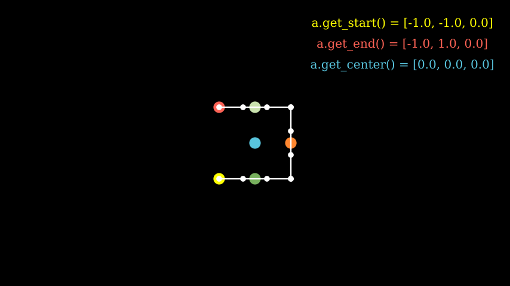

Manim的构建模块
本文档解释了 manim 的构建块，并将为您提供开始制作自己的视频所需的所有工具。
本质上，manim 为您提供了三个不同的概念，您可以将它们编排在一起以生成数学动画： 数学对象（或简称mobject ）、动画和 场景。正如我们将在以下部分中看到的，这三个概念中的每一个都在 manim 中作为单独的类实现： 、Mobject和 Animation类Scene。
笔记
建议您在阅读本页之前先阅读教程快速入门和 Manim 的输出设置。
对象(Mobjects)
Mobject 是所有 manim 动画的基本构建块。每个派生类Mobject代表一个可以在屏幕上显示的对象。例如，Circle、 、 Arrow、 等简单形状Rectangle都是 mobject。更复杂的结构如Axes、FunctionGraph或 BarChart也是 mobject。
Mobject如果您尝试在屏幕上显示 的实例，您只会看到一个空框架。原因是该类Mobject是所有其他对象的抽象基类，即它不具有任何可以在屏幕上显示的预先确定的视觉形状。它只是一个可以展示的事物的骨架。因此，您很少需要使用 ; 的普通实例Mobject。相反，您很可能会创建其派生类的实例。这些派生类之一是 VMobject. 代表V矢量化 Mobject。本质上，vmobject 是使用矢量图形的mobject要显示。大多数时候，您将处理 vmobject，尽管我们将继续使用术语“mobject”来指代可以在屏幕上显示的形状类，因为它更通用。
笔记
任何可以显示在屏幕上的对象都是 a mobject，即使它本质上不一定是数学的。
提示
要查看派生类的示例Mobject，请参阅该 geometry模块。其中大部分实际上也源自于 VMobject。
创建并显示 mobject
正如快速入门中所解释的，通常 manim 脚本中的所有代码都放在类construct()的方法中Scene。要在屏幕上显示 mobject，请调用add()包含的方法Scene。这是当 mobject 没有动画时在屏幕上显示它的主要方式。要从屏幕上删除 mobject，只需remove()从包含的 中调用该方法 即可Scene。
示例：创建 Mobjects

| Python |
|---|
| from manim import *
class CreatingMobjects(Scene):
def construct(self):
circle = Circle()
self.add(circle)
self.wait(1)
self.remove(circle)
self.wait(1)
|
放置 mobjects
让我们定义一个新的Scene名为 它的对象Shapes和一些对象。add()此脚本生成一个显示圆形、正方形和三角形的静态图片：
示例：图形

| Python |
|---|
| from manim import *
class Shapes(Scene):
def construct(self):
circle = Circle()
square = Square()
triangle = Triangle()
circle.shift(LEFT)
square.shift(UP)
triangle.shift(RIGHT)
self.add(circle, square, triangle)
self.wait(1)
|
默认情况下，mobject 在首次创建时被放置在坐标中心或原点。它们还被赋予了一些默认颜色。进一步地， Shapes场景通过该方法放置 mobject shift()。UP正方形从原点开始沿方向移动一个单位，而圆形和三角形分别移动一个单位LEFT和RIGHT。
注意
与其他图形软件不同，manim 将坐标中心放置在屏幕的中心。垂直方向正方向为向上，水平方向正方向为右。另请参见模块中定义的常量ORIGIN、UP、DOWN、LEFT、 RIGHT和其他常量constants。
还有许多其他可能的方法可以将对象放置在屏幕上，例如 move_to()、next_to()和align_to()。下一个场景 MobjectPlacement将使用所有三个。
示例：MobjectPlacement

| Python |
|---|
| from manim import *
class MobjectPlacement(Scene):
def construct(self):
circle = Circle()
square = Square()
triangle = Triangle()
# place the circle two units left from the origin
circle.move_to(LEFT * 2)
# place the square to the left of the circle
square.next_to(circle, LEFT)
# align the left border of the triangle to the left border of the circle
triangle.align_to(circle, LEFT)
self.add(circle, square, triangle)
self.wait(1)
|
该move_to()方法使用绝对单位（相对于 测量 ORIGIN），同时next_to()使用相对单位（从作为第一个参数传递的 mobject 测量）。 align_to()不用作LEFT测量单位，而是作为确定用于对齐的边界的一种方式。对象边界的坐标是使用其周围的假想边界框来确定的。
提示
manim 中的许多方法可以链接在一起。例如这两行
| Python |
|---|
| square = Square()
square.shift(LEFT)
|
可以替换为
| Python |
|---|
| square = Square().shift(LEFT)
|
从技术上讲，这是可能的，因为大多数方法调用都会返回修改后的 mobject。
样式化对象
以下场景更改了 mobject 的默认美观效果。
示例：MobjectStyling

| Python |
|---|
| from manim import *
class MobjectStyling(Scene):
def construct(self):
circle = Circle().shift(LEFT)
square = Square().shift(UP)
triangle = Triangle().shift(RIGHT)
circle.set_stroke(color=GREEN, width=20)
square.set_fill(YELLOW, opacity=1.0)
triangle.set_fill(PINK, opacity=0.5)
self.add(circle, square, triangle)
self.wait(1)
|
该场景使用两个主要函数来更改 mobject 的视觉样式：set_stroke()和set_fill()。前者改变对象边框的视觉风格，而后者改变内部的风格。默认情况下，大多数 mobject 具有完全透明的内部，因此您必须指定参数opacity来显示颜色。不透明度1.0表示完全不透明，而0.0表示完全透明。
仅VMobject实现set_stroke()和 的实例set_fill()。Mobject相反，实施 的实例set_color()。绝大多数预定义类都是派生自的VMobject，因此通常可以安全地假设您有权访问set_stroke()和set_fill()。
Mobject 屏幕顺序
下一个场景与上一节的场景完全相同MobjectStyling，除了一行之外。
示例：MobjectZOrder

| Python |
|---|
| from manim import *
class MobjectZOrder(Scene):
def construct(self):
circle = Circle().shift(LEFT)
square = Square().shift(UP)
triangle = Triangle().shift(RIGHT)
circle.set_stroke(color=GREEN, width=20)
square.set_fill(YELLOW, opacity=1.0)
triangle.set_fill(PINK, opacity=0.5)
self.add(triangle, square, circle)
self.wait(1)
|
这里唯一的区别（除了场景名称）是 mobject 添加到场景的顺序。在 中MobjectStyling，我们将它们添加为 ，而在 中，我们将它们添加为 。add(circle, square, triangle)``MobjectZOrder``add(triangle, square, circle)
正如您所看到的，参数的顺序add()决定了 mobject 在屏幕上显示的顺序，最左边的参数放在后面。
动画
Manim 的核心是动画。通常，您可以通过调用该方法向场景添加动画play()。
示例：一些动画

| Python |
|---|
| from manim import *
class SomeAnimations(Scene):
def construct(self):
square = Square()
# some animations display mobjects, ...
self.play(FadeIn(square))
# ... some move or rotate mobjects around...
self.play(Rotate(square, PI/4))
# some animations remove mobjects from the screen
self.play(FadeOut(square))
self.wait(1)
|
简而言之，动画是在两个对象之间进行插值的过程。例如，FadeIn(square)以完全透明版本开始， square以完全不透明版本结束，通过逐渐增加不透明度在它们之间进行插值。 FadeOut以相反的方式工作：它从完全不透明插值到完全透明。作为另一个示例，Rotate从作为参数传递给它的 mobject 开始，并以相同的对象但旋转一定量结束，这次插入 mobject 的角度而不是其不透明度。
动画方法
mobject 的任何可以更改的属性都可以设置动画。事实上，任何改变 mobject 属性的方法都可以通过使用animate().
示例：AnimateExample

| Python |
|---|
| from manim import *
class AnimateExample(Scene):
def construct(self):
square = Square().set_fill(RED, opacity=1.0)
self.add(square)
# animate the change of color
self.play(square.animate.set_fill(WHITE))
self.wait(1)
# animate the change of position and the rotation at the same time
self.play(square.animate.shift(UP).rotate(PI / 3))
self.wait(1)
|
参考：Animation
animate()是所有 mobject 的一个属性，它为随后出现的方法提供动画效果。例如，square.set_fill(WHITE)设置正方形的填充颜色，同时square.animate.set_fill(WHITE)为该动作设置动画。
动画运行时间
默认情况下，传递给的任何动画都会play()持续一秒钟。使用run_time参数来控制持续时间。
示例：运行时

| Python |
|---|
| from manim import *
class RunTime(Scene):
def construct(self):
square = Square()
self.add(square)
self.play(square.animate.shift(UP), run_time=3)
self.wait(1)
|
创建自定义动画
尽管 Manim 有许多内置动画，但您有时会需要从一种状态平滑地制作动画Mobject到另一种状态。如果您发现自己处于这种情况，那么您可以定义自己的自定义动画。您首先扩展该类Animation并覆盖它的interpolate_mobject(). 该interpolate_mobject()方法接收 alpha 作为参数，该参数从 0 开始并在整个动画中发生变化。因此，您只需根据其 interpolate_mobject 方法中的 alpha 值在 Animation 内部操作 self.mobject 即可。然后您将获得所有好处，Animation例如播放不同的运行时间或使用不同的速率函数。
假设您从一个数字开始，并想要创建一个Transform将其转换为目标数字的动画。您可以使用 来做到这一点FadeTransform，这将淡出起始数字并淡入目标数字。但是，当我们考虑将一个数字转换为另一个数字时，一种直观的方法是平滑地递增或递减它。Manim 有一项功能，允许您通过定义自己的自定义动画来自定义此行为。
您可以从创建自己的Count扩展类开始Animation。该类可以有一个带有三个参数的构造函数：DecimalNumberMobject、start 和 end。构造函数会将DecimalNumberMobject 传递给超级构造函数（在本例中为Animation构造函数），并设置开始和结束。
您唯一需要做的就是定义您希望它如何看待动画的每个步骤。interpolate_mobject()Manim 在基于视频帧速率、速率函数和播放动画的运行时间的方法中为您提供 alpha 值。alpha 参数保存一个介于 0 和 1 之间的值，表示当前播放动画的步长。例如，0 表示动画开始，0.5 表示动画进行到一半，1 表示动画结束。
对于动画Count，您只需找到一种方法来确定在给定 alpha 值处显示的数字，然后在interpolate_mobject()动画方法中设置该值Count。假设您从 50 开始并递增，直到DecimalNumber动画结束时达到 100。
- 如果 alpha 为 0，您希望该值为 50。
- 如果 alpha 为 0.5，则您希望该值为 75。
- 如果 alpha 为 1，您希望该值为 100。
通常，您从起始数字开始，仅添加要根据 alpha 值递增的部分值。因此，计算每一步要显示的数字的逻辑将是。一旦您设置了 的计算值，您就完成了。50 + alpha * (100 - 50)DecimalNumber
定义动画后，您可以使用任何速率函数在您想要的任何持续时间内Count播放它。SceneDecimalNumber
示例：计数场景

| Python |
|---|
| from manim import *
class Count(Animation):
def __init__(self, number: DecimalNumber, start: float, end: float, **kwargs) -> None:
# Pass number as the mobject of the animation
super().__init__(number, **kwargs)
# Set start and end
self.start = start
self.end = end
def interpolate_mobject(self, alpha: float) -> None:
# Set value of DecimalNumber according to alpha
value = self.start + (alpha * (self.end - self.start))
self.mobject.set_value(value)
class CountingScene(Scene):
def construct(self):
# Create Decimal Number and add it to scene
number = DecimalNumber().set_color(WHITE).scale(5)
# Add an updater to keep the DecimalNumber centered as its value changes
number.add_updater(lambda number: number.move_to(ORIGIN))
self.add(number)
self.wait()
# Play the Count Animation to count from 0 to 100 in 4 seconds
self.play(Count(number, 0, 100), run_time=4, rate_func=linear)
self.wait()
|
参考：Animation DecimalNumber interpolate_mobject() play()
使用 mobject 的坐标
Mobject 包含定义其边界的点。这些点可用于将其他 mobject 分别添加到彼此，例如通过get_center()、get_top() 和 等方法get_start()。以下是一些重要坐标的示例：
示例：MobjectExample

| Python |
|---|
| from manim import *
class MobjectExample(Scene):
def construct(self):
p1= [-1,-1,0]
p2= [1,-1,0]
p3= [1,1,0]
p4= [-1,1,0]
a = Line(p1,p2).append_points(Line(p2,p3).points).append_points(Line(p3,p4).points)
point_start= a.get_start()
point_end = a.get_end()
point_center = a.get_center()
self.add(Text(f"a.get_start() = {np.round(point_start,2).tolist()}", font_size=24).to_edge(UR).set_color(YELLOW))
self.add(Text(f"a.get_end() = {np.round(point_end,2).tolist()}", font_size=24).next_to(self.mobjects[-1],DOWN).set_color(RED))
self.add(Text(f"a.get_center() = {np.round(point_center,2).tolist()}", font_size=24).next_to(self.mobjects[-1],DOWN).set_color(BLUE))
self.add(Dot(a.get_start()).set_color(YELLOW).scale(2))
self.add(Dot(a.get_end()).set_color(RED).scale(2))
self.add(Dot(a.get_top()).set_color(GREEN_A).scale(2))
self.add(Dot(a.get_bottom()).set_color(GREEN_D).scale(2))
self.add(Dot(a.get_center()).set_color(BLUE).scale(2))
self.add(Dot(a.point_from_proportion(0.5)).set_color(ORANGE).scale(2))
self.add(*[Dot(x) for x in a.points])
self.add(a)
|
将 mobject 转换为其他 mobject
也可以将一个 mobject 转换为另一个 mobject，如下所示：
示例：示例变换

| Python |
|---|
| from manim import *
class ExampleTransform(Scene):
def construct(self):
self.camera.background_color = WHITE
m1 = Square().set_color(RED)
m2 = Rectangle().set_color(RED).rotate(0.2)
self.play(Transform(m1,m2))
|
Transform 函数将前一个 mobject 的点映射到下一个 mobject 的点。这可能会导致奇怪的行为，例如，当一个对象的点顺时针排列而其他点逆时针排列时。在这里，使用翻转函数并通过 numpy 的滚动函数重新定位点 可能会有所帮助：
示例：示例旋转

| Python |
|---|
| from manim import *
class ExampleRotation(Scene):
def construct(self):
self.camera.background_color = WHITE
m1a = Square().set_color(RED).shift(LEFT)
m1b = Circle().set_color(RED).shift(LEFT)
m2a= Square().set_color(BLUE).shift(RIGHT)
m2b= Circle().set_color(BLUE).shift(RIGHT)
points = m2a.points
points = np.roll(points, int(len(points)/4), axis=0)
m2a.points = points
self.play(Transform(m1a,m1b),Transform(m2a,m2b), run_time=1)
|
场景
该类Scene是Manim库的核心组件。每个对象都必须added指向一个要显示的场景，或者removed从该场景停止显示。每个动画都必须 played由一个场景组成，并且每个不发生动画的时间间隔都由对 的调用确定wait()。视频的所有代码必须包含在construct()派生自 的类的方法中Scene。Scene最后，如果要同时渲染多个场景，单个文件可能包含多个子类。